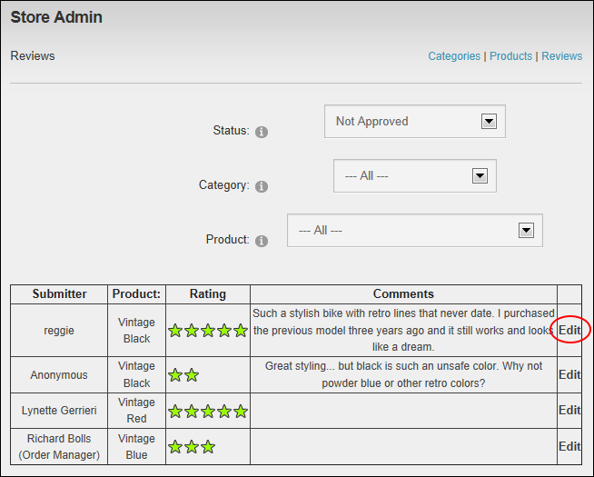

Editing Product Reviews
Catalog Managers can edit product reviews submitted to the Store using the Store Admin module. Note: Ratings cannot be edited.
- On the Store Admin module, click the Reviews link.
- Optional. Filter reviews by Status, Category and/or Product as required. See "Filtering Product Reviews"
- Click the Edit link beside the required review.

- In the Comments text box, edit the comments as required.
-
Click the Update button.
- Repeat Steps 2-5 to edit additional reviews.